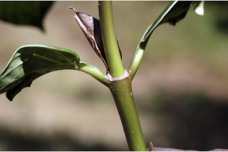
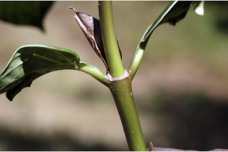
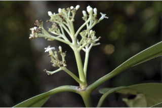
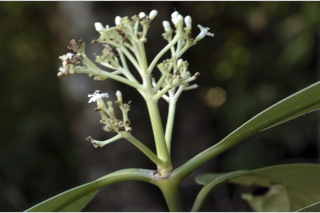

Large shrubs or small trees ca. 5 m tall.
ದೊಡ್ಡ ಗಾತ್ರದ ಪೊದೆಗಳು ಅಥವಾ ಅಂದಾಜು 5 ಮೀ. ಎತ್ತರದವರೆಗಿನ ಸಣ್ಣ ಗಾತ್ರದ ಮರಗಳು.
Large shrubs or small trees ca. 5 m tall.
பெரிய குத்துச்செடி அல்லது சிறிய மரம் 5 மீ. உயரம் வரை வளரக்கூடியது.
Young branchlets subterete to compressed, glabrous.
ಎಳೆಯ ಕಿರುಕೊಂಬೆಗಳು ಉಪ ದುಂಡಾಗಿರುವುದರಿಂದ,ಸಂಕುಚಿತವಾಗಿರುವ ಮಾದರಿಯದಾಗಿದ್ದು ರೋಮರಹಿತವಾಗಿರುತ್ತವೆ.
Young branchlets subterete to compressed, glabrous.
சிறியநுனிக்கிளைகள் குறுக்குவெட்டுத் தோற்றத்தில் வளையமானது முதல் தட்டையானது, உரோமங்களற்றது.
Leaves simple, opposite, decussate; stipules intrapetiolar, ovate -lanceolate, sheathing; petiole 0.8-3 cm, planoconvex in cross section, glabrous; lamina 10-25 x 4.5-10 cm, obovate to wide obovate, sometimes elliptic, apex abruptly and shortly acuminate, base cuneate - decurrent, margin revolute, chartaceous or thinly coriaceous, glabrous beneath; midrib and secondary_nerves raised above; secondary_nerves 13-18 pairs, parallel, gradually curved, domatia present at the axils; tertiary_nerves closely and obliquely percurrent.
ಎಲೆಗಳುಸರಳವಾಗಿದ್ದುಕತ್ತರಿಯಾಕಾರದಅಭಿಮುಖಜೋಡನಾವ್ಯವಸ್ಥೆಯಲ್ಲಿರುತ್ತವೆ,ಕಾವಿನೆಲೆಗಳು,ತೊಟ್ಟುಗಳನಡುವೆಇರುತ್ತವೆ,ಅಂಡ-ಭರ್ಜಿಯ ಆಕಾರದಲ್ಲಿದ್ದು ಹಾಗೂ ಒರೆಯ ಸಮೇತವಿರುತ್ತವೆ;ತೊಟ್ಟು 0.8 – 3 ಸೆಂ.ಮೀ.ವರೆಗಿನ ಉದ್ದವಿದ್ದು, ಅಡ್ಡ ಸೀಳಿದಾಗ ಸಪಾಟ ಪೀನ ಮಧ್ಯದ ಆಕಾರ ಹೊಂದಿದ್ದು,ರೋಮರಹಿತವಾಗಿರುತ್ತವೆ;ಪತ್ರಗಳು 10 -25 X 4.5 -10 ಸೆಂ.ಮೀ. ಗಾತ್ರ ಹೊಂದಿದ್ದು, ಬುಗುರಿಯಿಂದ ವಿಶಾಲವಾದ ಬುಗುರಿ ಕೆಲವು ವೇಳೆ ಅಂಡವೃತ್ತದ ಆಕಾರ ಹೊಂದಿದ್ದು, ಥಟ್ಟನೆ ಮತ್ತು ಕಿರುದಾಗಿ ಕ್ರಮೇಣ ಚೂಪಾಗುವ ತುದಿ, ಬೆಣೆಯಾಕಾರದಿಂದ ತಳಭಾಗಕ್ಕೆ ವಿಸ್ತರಿಸಿದ ಬುಡ, ಹಿಂಸುರುಳಿಯಾದ ಅಂಚು ಹೊಂದಿದ್ದು, ಕಾಗದವನ್ನೋಲುವ ಅಥವಾತೆಳುತೊಲನ್ನೋಲುವಮೇಲ್ಮೈಸಮೇತವಿರುತ್ತವೆಹಾಗೂರೋಮರಹಿತವಾಗಿರುತ್ತವೆ;ಮಧ್ಯನಾಳ ಮತ್ತು ಎರಡನೇ ದರ್ಜೆಯ ನಾಳಗಳು ಪತ್ರದ ಮೇಲ್ಭಾಗದಲ್ಲಿ ಉಬ್ಬಿರುತ್ತವೆ;ಎರಡನೇ ದರ್ಜೆಯ ನಾಳಗಳು 13 ರಿಂದ 18 ಜೋಡಿಗಳಿದ್ದು,ಅಕ್ಷದ ಲಂಬ ಕೋನಕ್ಕೆ ಸಮಾನಾಂತರದಲ್ಲಿರುತ್ತವೆ ,ಮತ್ತು ಕ್ರಮೇಣವಾಗಿ ಬಾಗಿರುತ್ತವೆ ಹಾಗೂ ಅಕ್ಷಾಕಂಕುಳಿನಲ್ಲಿ ಸೂಕ್ಷ್ಮ ಸಹಜೀವಿ ಗೂಡುಗಳ ಸಮೇತವಿರುತ್ತವೆ;ಮೂರನೇ ದರ್ಜೆಯ ನಾಳಗಳು ಅತಿ ಕಡಿಮೆ ಅಂತರದಲ್ಲಿದ್ದು,ಓರೆಯಾಗಿ ಎಲೆ ದಿಂಡಿಗೆ ಅಡ್ಡವಾಗಿ ಕೂಡುತ್ತವೆ.
Leaves simple, opposite, decussate; stipules intrapetiolar, ovate -lanceolate, sheathing; petiole 0.8-3 cm, planoconvex in cross section, glabrous; lamina 10-25 x 4.5-10 cm, obovate to wide obovate, sometimes elliptic, apex abruptly and shortly acuminate, base cuneate - decurrent, margin revolute, chartaceous or thinly coriaceous, glabrous beneath; midrib and secondary_nerves raised above; secondary_nerves 13-18 pairs, parallel, gradually curved, domatia present at the axils; tertiary_nerves closely and obliquely percurrent.
இலைகள் தனித்தவை, எதிரடுக்கமானவை, குறுக்குமறுக்கானவை; இலையடிச்செதில் காம்புகளுக்கிடையே (இண்ட்ராபீட்டியோலார்) உடையது, முட்டை-ஈட்டி வடிவானது, தண்டிற்க்கு உறைப்போன்றது; இலைக்காம்பு 0.8-3 செ.மீ., குறுக்குவெட்டுத் தோற்றத்தில் பிளேனோகான்வக்ஸ், உரோமங்களற்றது; இலை அலகு 10-25 X 4.5-10 செ.மீ., தலைகீழ் முட்டை வடிவானது முதல் அகன்ற தலைகீழ் முட்டை வடிவானது, சிலசமயங்களில் நீள்வட்ட வடிவானது, அலகின் நுனி குட்டையான அதிக்கூரியது, அலகின் தளம் ஆப்பு வடிவானது-டெக்கரண்ட், அலகின் விளிம்பு பின்புறம் வளைந்து (ரெவலுட்) காணப்படும், சார்ட்டோசியஸ் அல்லது மெல்லிய கோரியேசியஸ், உரோமங்களற்றது; மையநரம்பு மற்றும் இரண்டாம் நிலை நரம்புகள் அலகின் பரப்பைவிட உயர்ந்து இருக்கும்; இரண்டாம் நிலை நரம்புகள் 13-18 ஜோடிகள், இணையானவை, சீராக வளைந்தவை, டொமேசியா நரம்புகளின் கோணங்களில் உடையது; மூன்றாம் நிலை நரம்புகள் விளிம்பு நோக்கிய இணையான நெருக்கமான பெர்க்கரண்ட்.
Inflorescence terminal with branches terminating in cymes; flowers white, sessile.
ಪುಷ್ಪಮಂಜರಿಗಳು ತುದಿಯಲ್ಲಿದ್ದು ಕವಲುಗಳು ಮಧ್ಯಾರಂಭಿ ಮಂಜರಿಗಳಾಗಿ ಅಂತ್ಯಗೊಳ್ಳುವ ಮಾದರಿವುಗಳಾಗಿರುತ್ತವೆ; ಹೂಗಳು ಬಿಳಿಬಣ್ಣದವುಗಳಾಗಿದ್ದು, ತೊಟ್ಟುರಹಿತವಾಗಿರುತ್ತವೆ.
Inflorescence terminal with branches terminating in cymes; flowers white, sessile.
மஞ்சரி தண்டின் நுனியில் காணப்படும், மஞ்சரி கிளைத்தவை மற்றும் கிளைகள் சைம் வகை மஞ்சரியில் முடிவடைகின்றன; மலர்கள் வெள்ளை நிறமானது, காம்பற்றது.
Drupe, ovoid, with two planoconvex pyrenes; seeds 1 per pyrene.
ಡ್ರೂಪ್ಗಳು ಅಂಡಾಕಾರದಲ್ಲಿದ್ದು ಸಪಾಟ ಪೀನ ಮಧ್ಯದ ಆಕಾರದ 2 ಪೈರೀನುಗಳನ್ನೊಳಗೊಂಡಿರುತ್ತವೆ; ಪ್ರತಿ ಪೈರೀನಿನಲ್ಲಿ 1 ಬೀಜವಿರುತ್ತದೆ.
Drupe, ovoid, with two planoconvex pyrenes; seeds 1 per pyrene.
உள்ளோட்டுத்தசைகனி (ட்ரூப்), முட்டை வடிவானது, 2 பைரீன் உடையது; ஒவ்வொரு பைரீனிம் ஒர் விதையுடையது.
 



 
